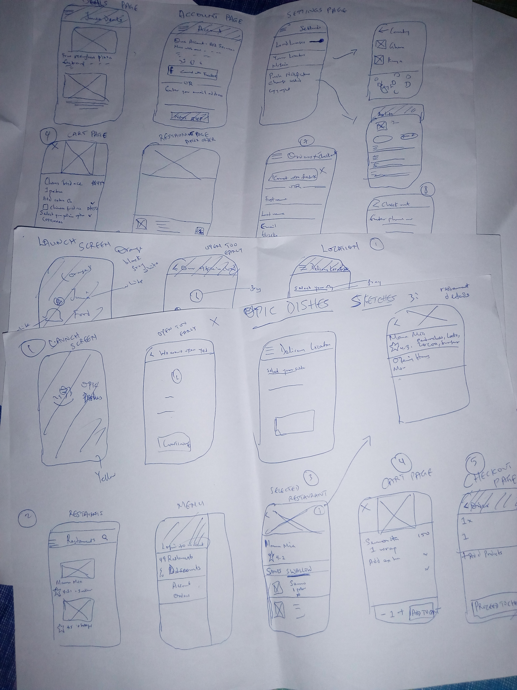

Userflow

I also sketched out some low fidelity wireframes:
Wireframes
I then did a mock up using Figma and prototyped with Invision
View prototypeThe name of the app is 'Opic Dishes'.
The goal of the app is to make it easy for employees in a large plaza to get their food, thereby giving them more time to focus on their work. I followed the double diamond process:
Charles:
Male
Mimi:
Female
I checked out existing food apps to see what users where using and how they used it. I then created an app that will make it possible for users to just order food from their phones and get back to work while the food is delivered to them.
I also sketched out some low fidelity wireframes:
I then did a mock up using Figma and prototyped with Invision
View prototype